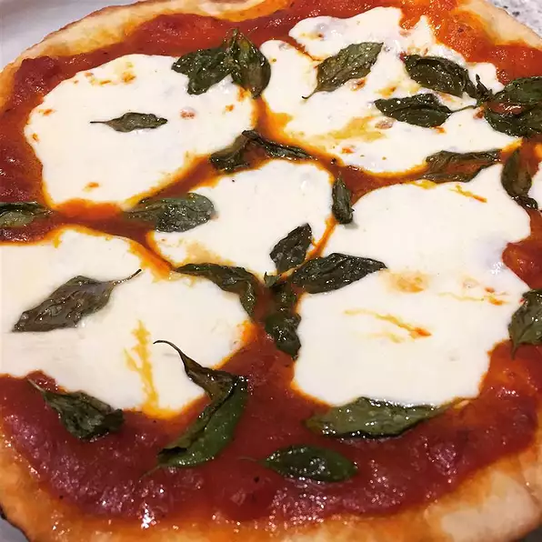

Description
You just came back from your lovely trip to Southern Italy but you're feeling like something's missing in your house now.
You may wonder, what though?
A fresh, hand-made pizza, of course!
But fear not, my dear friend. Just read along this recipe and start making your own, maybe-ugly-but-delicious pizza! Like Italians say, "every cockroach is beautiful in their mother's eyes".
(Italians are weird but we love 'em anyways)
Ingredients
- 3 ½ cups all-purpose flour
- 1 teaspoon salt
- 1 cup water
- 1 (.25 ounce) package active dry yeast
- 1 pinch white sugar
- ¼ cup flour for dusting
- ...and many more I'm too lazy to list!
Steps
- Stir flour and 1 teaspoon salt in a bowl. Set aside.
- Mix water, yeast, and sugar in a large bowl. Let stand until yeast begins to form a creamy foam, about 5 minutes.
- Stir half the flour mixture into yeast mixture until no dry spots remain. Stir in remaining flour, 1/2 cup at a time, mixing well after each addition. When dough pulls together, turn it out onto a lightly floured surface and knead until smooth and elastic, about 8 minutes.
- Lightly oil a large bowl, then place dough in the bowl and turn to coat with oil. Cover with a light cloth and let rise in a warm place (80 to 95 degrees F (27 to 35 degrees C)) until doubled in volume, about 1 hour. Punch dough down, divide into 4 equal pieces, and form each into a ball.
- I haven't listed all of the ingredients, do you really think I'm gonna list all of the steps?!
Back to Homepage